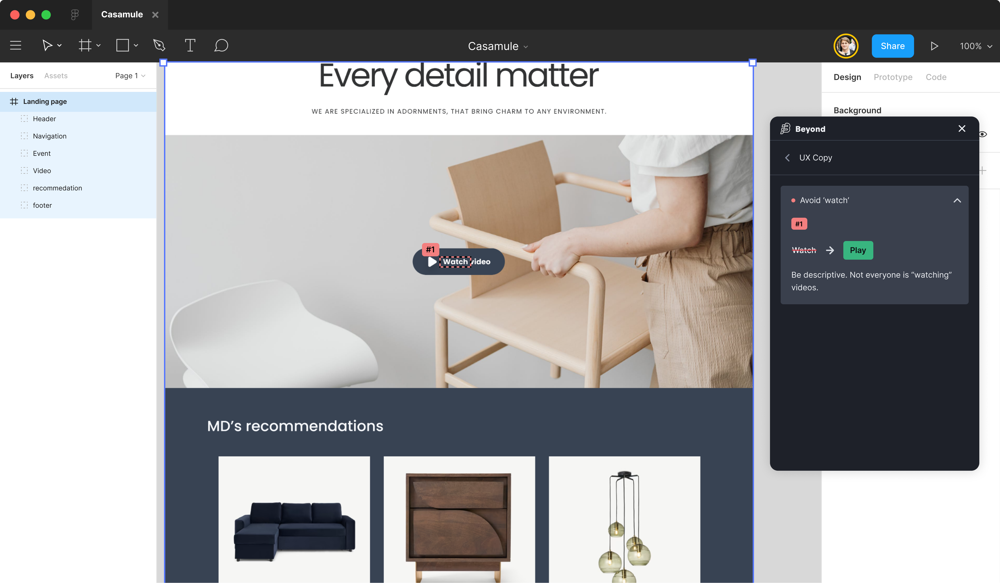

Problem
UX copy carries assumptions about its reader. Sense-specific verbs (“watch this video”) signal that the reader is a sighted, hearing user. Gendered defaults (“guys”, “his/her”) signal a binary audience. Violent or war metaphors (“kill the process”, “hit a target”) signal a particular cultural register. Idioms with cultural lift (“low-hanging fruit”) silently exclude non-native speakers and translators.
None of these are accessibility violations in the WCAG sense, but they signal who is and isn’t addressed. A screen-reader user who hears “watch this video” may skip past a piece of content that, mechanically, would have worked for them.
Pattern
Audit each piece of UI copy against five categories. Build a project-specific substitution glossary, version-controlled with the codebase.
- Sense-specific verbs. “Watch” → “play”. “See” → “view” only when neutral; otherwise reword. “Hear” → “listen”. “Look at” → reword.
- Gendered defaults. “Guys” → “everyone”, “folks”, “people”. “His/her” → singular “their”. Avoid title prefixes (Mr./Mrs.) unless legally required.
- Violent / war metaphors. “Kill the process” → “stop the process”. “Hit a target” → “reach a target”. “Pull the trigger” → “commit” or “confirm”.
- Mental-health metaphors. “OCD about”, “schizophrenic UI”, “crazy fast”, drop entirely; reword for what was actually meant.
- Culturally-specific idioms. Replace with literal language. “Low-hanging fruit” → “easy wins”. “Drink the Kool-Aid” → “adopt the approach”.
The substitutions aren’t about purity, they’re about precision. “Play” describes the actual button function (it triggers playback whether the user watches or listens). “Stop the process” describes the actual outcome.
Visual examples

Code
Most of this pattern is content, not code. The few touchpoints in markup are aria-label values for icon-only controls and visually-hidden link labels.
<!-- Before: assumes the user watches -->
<button>Watch the demo</button>
<!-- After: describes the action, not the sense -->
<button>Play the demo</button>
<!-- Icon-only play control: aria-label uses the inclusive verb -->
<button aria-label="Play the demo">
<svg aria-hidden="true" focusable="false">...</svg>
</button>Annotation
In design files, mark exclusive copy with strikethrough plus the canonical substitution and the category. The category trains the team over time.
Watch this video [strikethrough]
↓ Play this video
Category: sense-specific verbWCAG mapping
- 3.3.2 Labels or Instructions (opens in new tab) A clear, unambiguous labels
- 3.1.5 Reading Level (opens in new tab) AAA supplemental content for above-lower-secondary reading level
Related patterns
- Inclusive imagery (#04), image content that doesn’t encode the same kind of audience assumptions
- Inclusive identity forms (#05), copy patterns specifically for gender, name, and pronoun fields